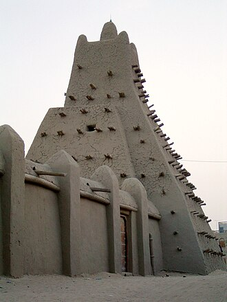

Presentation
La médersa, l'université ou la mosquée de Sankoré, construite en 1325, est l'un des trois anciens centres de formations universitaires situés dans la ville de Tombouctou, au Mali. Elle a formé des générations d’intellectuels musulmans jusqu'à aujourd’hui. Elle est également l'une des trois grandes mosquées de Tombouctou.
جامع سنكوري أو جامع تمبكتو الكبير هو جامع يقع في حي سنكوري في تمبكتو في مالي.
Sankoré Madrasa is one of three medieval mosques and centres of learning located in Timbuktu, Mali. Founded in the 14th or early 15th century, the Sankoré mosque went through multiple periods of patronage and renovation under both the Mali Empire and the Songhai Empire until its decline following the Battle of Tondibi in 1591. The mosque developed into an Arabian madrasa.
Madrasah Sankoré, Universitas Sankoré, atau Masjid Sankore adalah pusat pembelajaran tertua yang terletak di Timbuktu, Mali, Afrika Barat.
جامعہ سنکوری یا مدرسہ سنکوری جسے مسجد سنکوری بھی کہا جاتا ہے، ٹمبکٹو، مالی مغربی افریقہ کے تین قدیم تعلیمی اداروں میں سے ایک ہے۔ جامعہ ٹمبکٹو سنکوری کی تین مساجد دجنگیریبر مسجد، سیدی یحیی وغیرہ سے مل کر بنتی ہے۔ مدرسہ عربی میں اسکول/جامعہ کے معنوں میں ہے۔ جو عام طور پر مسلمان اسلامی دینی تعلیم کے اسکولوں کو یہ نام دیتے ہیں۔
La Universidad de Sankore, la Mezquita de Sankore o la Madrasa de Sankore, es el más antiguo de los tres centros de aprendizaje ubicados en Tombuctú, Malí.
La Madrasa Sankoré, Università di Sankoré o Moschea Sankoré è uno dei tre antichi centri di insegnamenti situati a Timbuctù, Mali, Africa occidentale. Insieme alla la Moschea Djinguereber e alla Moschea Sidi Yahya, costituisce l'Università di Timbuctù. Madrasa significa scuola/università in arabo e nelle altre lingue utilizzate dalle popolazioni musulmane.
A Universidade, Mesquita ou Madraça de Sancoré (Sankore) é o mais antigo dos três centros de ensino de Tombuctu, no Mali, África Ocidental. As três mesquitas, Sancoré, Djinguereber e Sidi Iáia, compõem o centro de conhecimento e estudos islâmicos conhecido como Universidade de Tombuctu, um dos grandes centros de produção de conhecimento do mundo islâmico medieval. A madraça é uma "escola" em árabe.
桑科雷伊斯兰学校，亦称桑科雷清真寺 、桑科雷宣礼寺 或桑科雷大学，是马里廷巴克图的三座中世纪伊斯兰学术中心之一，与津加里贝尔清真寺和西迪·叶海亚清真寺齐名。该清真寺始建于14世纪，在马里帝国与桑海帝国时期曾历经多次资助与翻新，但在1591年的通迪比战役后走向衰落。该清真寺后来发展成一所伊斯兰学校，并在16世纪达到鼎盛。
Санкоре — медресе в исторической части города Томбукту. Признано ЮНЕСКО памятником Всемирного наследия.
มัดเราะซะฮ์ซ็องกอเร หรือที่เรียกว่า มหาวิทยาลัยซ็องกอเร และ มัสยิดซ็องกอเร เป็นศูนย์กลางแห่งการศึกษาโบราณหนึ่งในสามแห่ง ตั้งอยู่ในเมืองทิมบักตู ประเทศมาลี เชื่อกันว่าก่อสร้างขึ้นโดยราชามันซามูซา ผู้ครองจักรวรรดิมาลีในเวลานั้น
Universitetet i Sankore eller Sankore Madrasah i Timbuktu är ett av de tre äldsta lärosätena i Mali. Det grundades som en moské cirka 989 och blev ett fullfjädrat madrasah 1325. Universitetet hade under sin höjdpunkt på 1100-talet uppemot 25 000 studenter från stora delar av Afrika. Det undervisades i bland annat astronomi, geografi, matematik och muslimsk teologi. Biblioteket som då var ett av de största i världen rymde mellan 400 000 och 700 000 manuskript.
Moscheea Sankore este o moschee din orașul Timbuktu, Mali. Aceasta este cea mai veche moschee din oraș și unul dintre cele mai celebre monumente din Mali.
På kartan
Dokument och länkar
- Wikipédia — Français
- Wikipédia — العربية
- Wikipédia — English
- Wikipédia — Bahasa Indonesia
- Wikipédia — اردو
- Wikipédia — Español
- Wikipédia — Italiano
- Wikipédia — Português
- Wikipédia — 中文
- Wikipédia — Русский
- Wikipédia — ไทย
- Wikipédia — Svenska
- Wikipédia — Română
- Wikidata — Q1265294
Data: Wikidata (CC0), uppdateras var tredje månad. Året är byggnadens tidigaste kända byggdatum: för en byggnad som blev moské senare (som Hagia Sofia) är det den ursprungliga byggnadens. Foton: Wikimedia Commons, upphovsperson och licens på varje fotos sida.